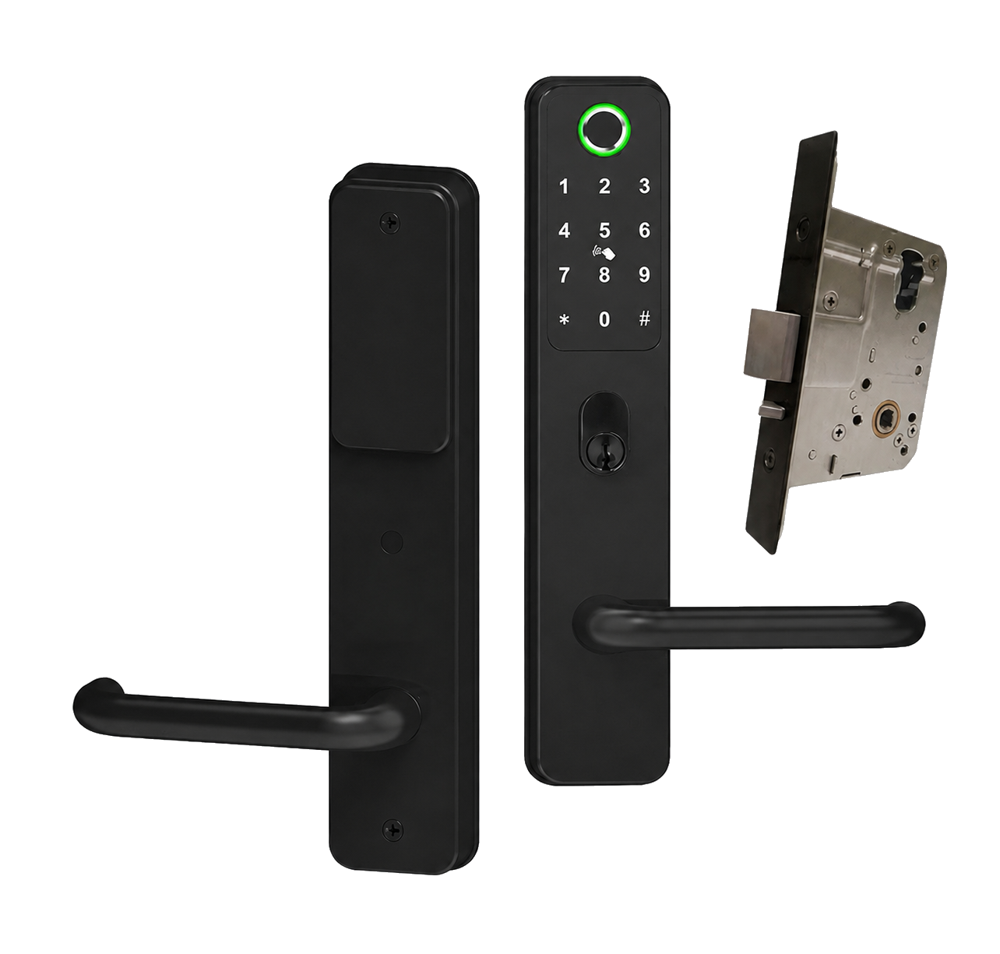
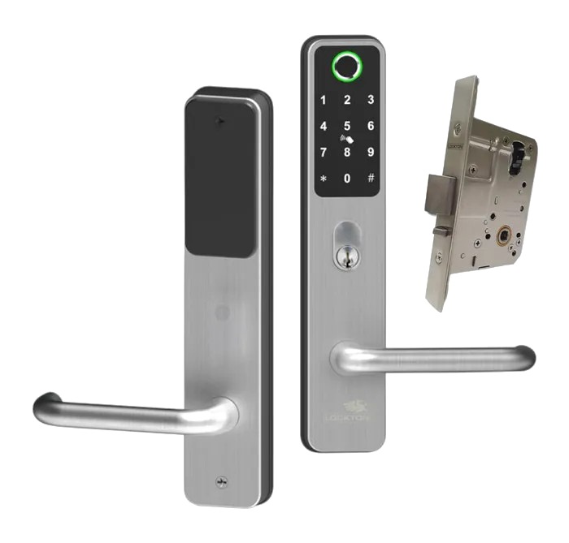
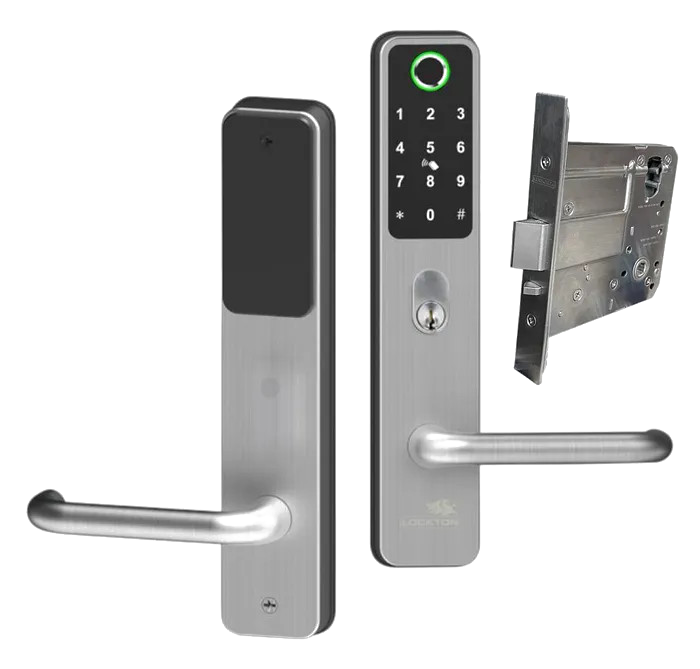

Flexible access
Use fingerprint, PIN, RFID tag, Bluetooth app, optional Wi-Fi gateway access or the mechanical key override.
SMART ACCESS
A hard-wearing electronic lever lock for homes, businesses and shared spaces—built around the access methods people actually use.

WHY CADELL 52
Cadell 52 brings PIN, fingerprint, RFID, app and mechanical-key access into a familiar lever-lock format. SPL can help match the lock and mortice option to your door and access needs.
Use fingerprint, PIN, RFID tag, Bluetooth app, optional Wi-Fi gateway access or the mechanical key override.
IP66-rated handles and a 2-hour fire rating make it a strong fit for weather-exposed and higher-use timber doors.
Available with 60 mm or 95 mm mortice options and designed to retrofit many existing wide-plate installations.
THE DETAILS
The final configuration depends on your door, handing and access requirements. SPL can confirm compatibility before supply or installation.
SATIN STAINLESS OPTION
Cadell 52 is also available in satin stainless steel. SPL can confirm the suitable mortice backset and handing for your application.


READY TO SPECIFY
Specifications: Lockton Security. Satin stainless visuals: 60 mm option and 95 mm option.